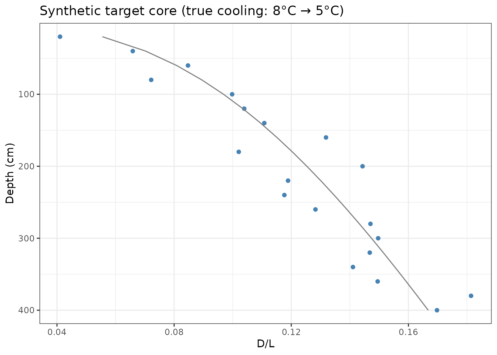
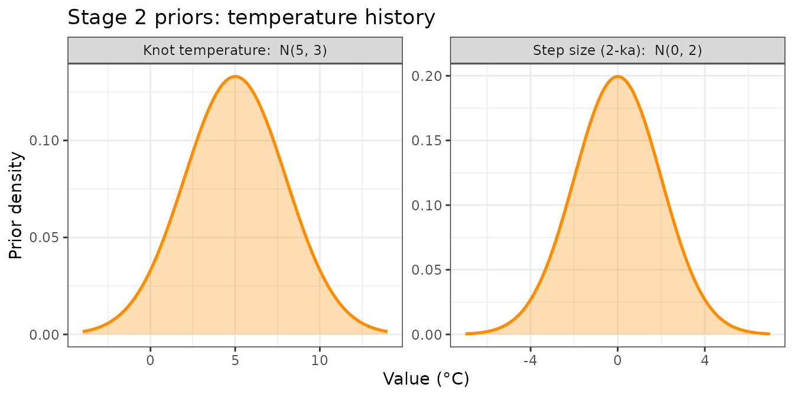
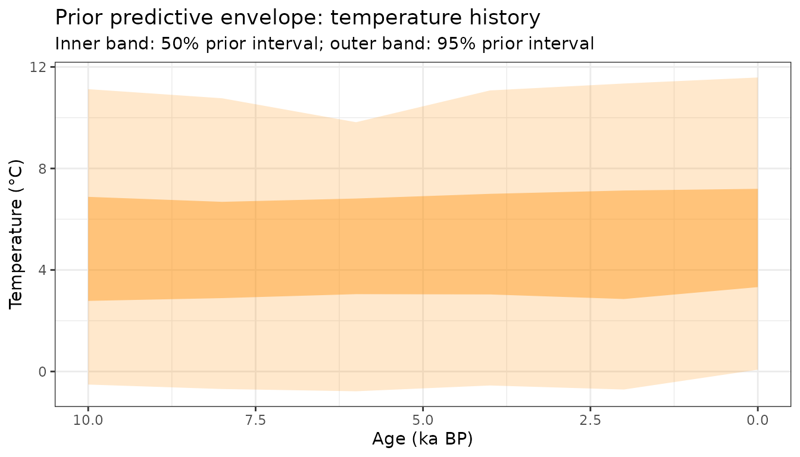
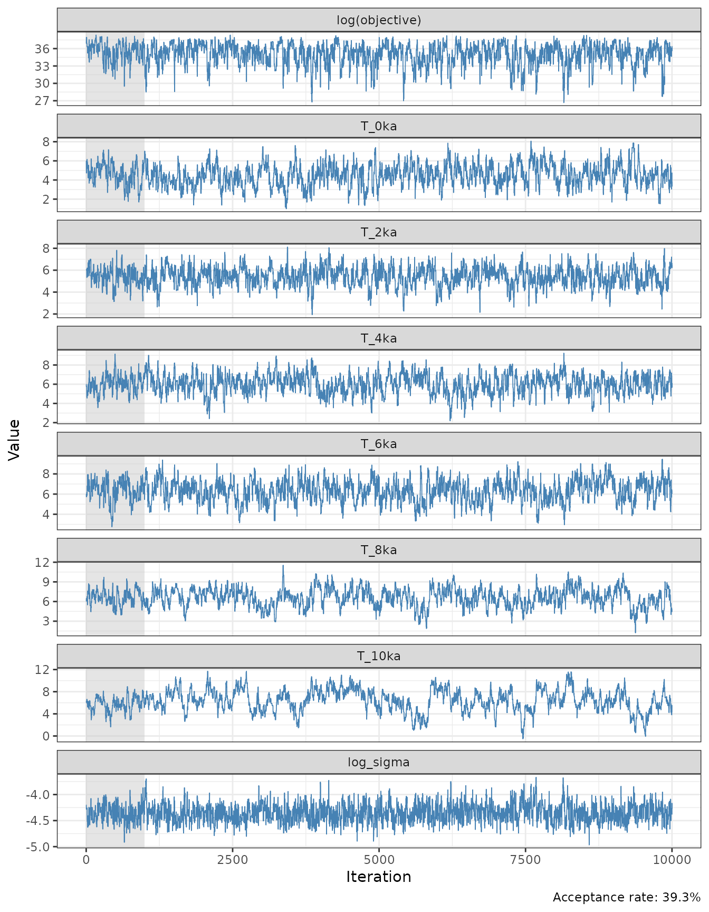
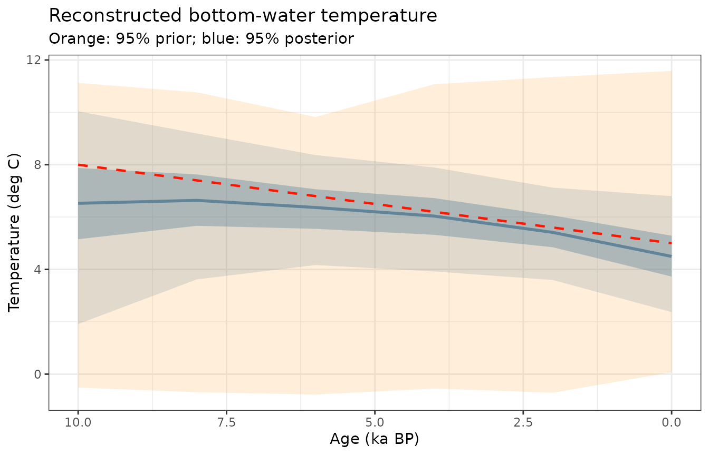
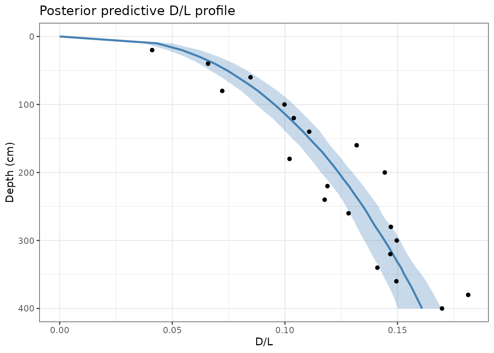

Holocene Temperature Reconstruction (Stage 2)
Source:vignettes/temperature-reconstruction.Rmd
temperature-reconstruction.RmdOverview
Stage 2 takes the kinetic parameters estimated in Stage 1 as fixed and infers the temperature history of a new (“target”) core whose thermal history is unknown. The unknown is parameterised as a vector of temperatures at 6 control knots (0, 2, 4, 6, 8, 10 ka BP) connected by linear interpolation. A first-difference smoothness prior penalises large step-to-step changes.
This two-stage approach avoids simultaneously inferring kinetics and temperature from the same data, which would be highly under-determined.
Stage 1 recap: retrieve kinetics
We regenerate the Stage 1 MCMC with a fixed seed so the kinetics are reproducible across vignettes:
true_AAR <- default_AAR_params
# Heating experiments
heating_data <- sim_heating_data(AAR_params = true_AAR, sigma = 0.01, seed = 1)
# Calibration core (4°C lake)
am_cal <- rate_to_age_model(rate_cm_per_ka = 50, max_depth_cm = 750)
cal_data <- sim_downcore_data(am_cal,
temp_model = 4,
sample_ages_ka = seq(0.5, 15, by = 0.5),
AAR_params = true_AAR,
sigma = 0.015,
seed = 2)
init_kin <- c(log_Ae = 42.12, Ea = 31.5, x = 3.0, log_sigma = log(0.01))
prop_kin <- c(log_Ae = 0.05, Ea = 0.3, x = 0.05, log_sigma = 0.1) / 5
mcmc_kin <- run_mcmc(log_posterior_kinetics,
init = init_kin,
n_iter = 10000,
proposal_sd = prop_kin,
heating_data = heating_data,
downcore_cal_data = cal_data,
age_model_cal = am_cal,
temp_cal = 4)
cat("Stage 1 acceptance rate:", round(mcmc_kin$acceptance_rate * 100, 1), "%\n")
#> Stage 1 acceptance rate: 10.4 %Extract the posterior median for the kinetic parameters to use as fixed values in Stage 2:
burnin_idx <- 1001:10000
kin_post <- mcmc_kin$samples[burnin_idx, ]
kin_fixed <- c(
log_Ae = median(kin_post[, "log_Ae"]),
Ea = median(kin_post[, "Ea"]),
x = median(kin_post[, "x"]),
log_sigma = median(kin_post[, "log_sigma"])
)
cat("Fixed kinetics used in Stage 2:\n")
#> Fixed kinetics used in Stage 2:
print(round(kin_fixed, 4))
#> log_Ae Ea x log_sigma
#> 42.3394 31.6627 3.0359 -4.3888Synthesise the target core
The target core comes from a lake with an unknown temperature history. For this demonstration we use a linear Holocene cooling scenario: 8°C at 10 ka BP declining to 5°C at present. Samples span 0.5 to 10 ka at 500-yr spacing.
true_T_history <- data.frame(age_ka = c(0, 10), temp_C = c(5, 8))
am_target <- rate_to_age_model(rate_cm_per_ka = 40, max_depth_cm = 400)
target_data <- sim_downcore_data(am_target,
temp_model = true_T_history,
sample_ages_ka = seq(0.5, 10, by = 0.5),
AAR_params = true_AAR,
sigma = 0.015,
seed = 3)
ggplot(target_data, aes(x = DL_obs, y = depth_cm)) +
geom_point(size = 1.5, colour = "steelblue") +
geom_line(aes(x = DL_pred), colour = "grey50") +
scale_y_reverse() +
labs(x = "D/L", y = "Depth (cm)",
title = "Synthetic target core (true cooling: 8°C → 5°C)") +
theme_bw()
Prior specification for Stage 2
knot_ages <- c(0, 2, 4, 6, 8, 10) # ka BPStage 2 has three prior components for the temperature history parameters:
Marginal temperature prior — each knot temperature receives a weakly informative Normal(5, 3) prior, centred near present-day Arctic/sub-Arctic mean annual temperatures. The ±3σ range spans roughly −4°C to 14°C, which easily encompasses Holocene variability without constraining the inference to any particular trend.
Smoothness prior — adjacent knot differences receive a Normal(0, 2) penalty on the log scale. This encodes the physical expectation of gradual Holocene temperature change: 2-ka step sizes larger than ~4°C (2σ) are strongly penalised but not impossible.
Noise prior — log(σ) receives Normal(log(0.02), 1), the same as Stage 1, centred near HPLC analytical precision.
# Marginal temperature prior and smoothness prior
prior_T_df <- rbind(
data.frame(
component = "Knot temperature: N(5, 3)",
value = seq(-4, 14, length.out = 300),
density = dnorm(seq(-4, 14, length.out = 300), 5, 3)
),
data.frame(
component = "Step size (2-ka): N(0, 2)",
value = seq(-7, 7, length.out = 300),
density = dnorm(seq(-7, 7, length.out = 300), 0, 2)
)
)
ggplot(prior_T_df, aes(x = value, y = density)) +
geom_area(fill = "darkorange", alpha = 0.3) +
geom_line(colour = "darkorange", linewidth = 0.9) +
facet_wrap(~component, scales = "free", ncol = 2) +
labs(x = "Value (°C)", y = "Prior density",
title = "Stage 2 priors: temperature history") +
theme_bw()
Drawing 200 independent trajectories from the marginal knot prior gives a prior predictive envelope — the range of temperature histories considered plausible before the D/L data are observed:
set.seed(7)
n_prior <- 200
prior_T_mat <- matrix(rnorm(n_prior * length(knot_ages), mean = 5, sd = 3),
nrow = n_prior)
summ_prior <- do.call(rbind, lapply(seq_along(knot_ages), function(j) {
data.frame(
age_ka = knot_ages[j],
lo95 = quantile(prior_T_mat[, j], 0.025),
hi95 = quantile(prior_T_mat[, j], 0.975),
lo50 = quantile(prior_T_mat[, j], 0.25),
hi50 = quantile(prior_T_mat[, j], 0.75)
)
}))
ggplot(summ_prior, aes(x = age_ka)) +
geom_ribbon(aes(ymin = lo95, ymax = hi95),
fill = "darkorange", alpha = 0.2) +
geom_ribbon(aes(ymin = lo50, ymax = hi50),
fill = "darkorange", alpha = 0.4) +
scale_x_reverse() +
labs(x = "Age (ka BP)", y = "Temperature (°C)",
title = "Prior predictive envelope: temperature history",
subtitle = "Inner band: 50% prior interval; outer band: 95% prior interval") +
theme_bw()
Run Stage 2 MCMC
The temperature parameterisation uses 6 control knots. Initialise near a plausible flat temperature and use a moderately diffuse proposal:
init_T <- c(T_0ka = 6, T_2ka = 6, T_4ka = 6,
T_6ka = 6, T_8ka = 6, T_10ka = 6,
log_sigma = log(0.015))
prop_T <- c(T_0ka = 0.3, T_2ka = 0.3, T_4ka = 0.3,
T_6ka = 0.3, T_8ka = 0.3, T_10ka = 0.3,
log_sigma = 0.1) * 2
mcmc_T <- run_mcmc(log_posterior_temperature,
init = init_T,
n_iter = 10000,
proposal_sd = prop_T,
knot_ages_ka = knot_ages,
kinetics_params = kin_fixed,
downcore_target_data = target_data,
age_model_target = am_target)
cat("Stage 2 acceptance rate:", round(mcmc_T$acceptance_rate * 100, 1), "%\n")
#> Stage 2 acceptance rate: 39.3 %Trace plots
Check that chains mix well across all temperature knots:
plot_mcmc_chains(mcmc_T, burnin = 1000)
Temperature reconstruction
The reconstruction shows the posterior median (line), the 95% credible interval (blue ribbon), the true temperature history (red dashed line), and the 95% prior predictive interval (orange ribbon). The posterior should be substantially narrower than the prior, demonstrating that the D/L data are informative about temperature:
true_T_df <- data.frame(age_ka = knot_ages,
temp_C = c(5, 5.6, 6.2, 6.8, 7.4, 8))
plot_temperature_reconstruction(mcmc_T,
knot_ages_ka = knot_ages,
true_T_history = true_T_df,
burnin = 1000) +
geom_ribbon(data = summ_prior,
aes(x = age_ka, ymin = lo95, ymax = hi95),
fill = "darkorange", alpha = 0.15, inherit.aes = FALSE) +
labs(subtitle = "Orange: 95% prior; blue: 95% posterior")
The true cooling trend (red dashed line) should fall within the credible envelope. Uncertainty is largest at the oldest end of the record, where the cumulative integration of noisy D/L data limits resolution. The contrast between the wide orange prior and the narrow blue posterior quantifies how much information the D/L profile contributes.
Posterior predictive check
Verify that the recovered temperature history reproduces the observed D/L profile. For Stage 2 we draw temperature knots from the posterior, build a temperature history per draw, and run the forward model with the fixed kinetics:
post_T <- tail(mcmc_T$samples, nrow(mcmc_T$samples) - 1000)
T_cols <- grep("^T_", colnames(post_T), value = TRUE)
idx <- sample(nrow(post_T), 200)
kin_AAR <- list(Ae = exp(kin_fixed[["log_Ae"]]),
Ea = kin_fixed[["Ea"]],
R = 0.001987,
x = kin_fixed[["x"]])
depths_check <- seq(0, 400, by = 10)
pred_list <- lapply(idx, function(i) {
tmp_model <- data.frame(age_ka = knot_ages,
temp_C = as.numeric(post_T[i, T_cols]))
fwd <- racemize_depth_series(depths_check, am_target, tmp_model,
AAR_params = kin_AAR)
fwd$draw <- i
fwd
})
pred_df <- do.call(rbind, pred_list)
summ <- pred_df |>
dplyr::group_by(depth_cm) |>
dplyr::summarise(median = median(DL),
lo95 = quantile(DL, 0.025),
hi95 = quantile(DL, 0.975),
.groups = "drop")
ggplot(summ, aes(x = median, y = depth_cm)) +
geom_ribbon(aes(xmin = lo95, xmax = hi95, y = depth_cm),
fill = "steelblue", alpha = 0.3) +
geom_line(colour = "steelblue", linewidth = 1) +
geom_point(data = target_data, aes(x = DL_obs, y = depth_cm),
colour = "black", size = 1.5) +
scale_y_reverse() +
labs(x = "D/L", y = "Depth (cm)",
title = "Posterior predictive D/L profile") +
theme_bw()
Identifiability and uncertainty
Several factors govern the width of the credible interval:
Number of samples: more observations reduce uncertainty. Here we used 20 samples.
Observation noise (
sigma): analytical precision in the D/L measurement. Here we used to , is that realistic?Kinetics uncertainty: I fixed kinetics at their Stage 1 posterior median. Propagating the full Stage 1 posterior (i.e., drawing both kinetics and temperature jointly) would widen the credible interval further. We should do this, and turn this into a proper Bayesian Hierarchical Model.
```